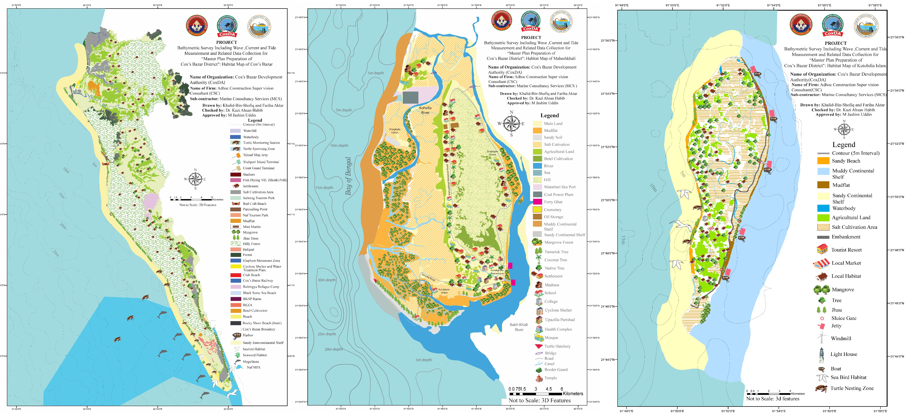

The Cox’s Bazar Development Authority initiated the "Master Plan Preparation of Cox’s Bazar District" project, which includes the preparation of a Habitat Map as outlined in the terms of reference. To complete this task, the Adhoc Construction Supervision Consultant (CSC), in collaboration with their sub-contractor, Marine Consultancy Service (MCS), assigned the task to environmental expert Dr. Kazi Ahsan Habib. Dr. Habib supervised us for the creation of habitat maps for three specific areas: Cox’s Bazar, Maheshkhali Island, and Kutubdia.
The objective of the Habitat Map was to visualize the existing local resource base, land uses, livelihoods, and potential habitats for flora and fauna. To ensure the accuracy and comprehensiveness of the map, field surveys were conducted over three days to validate satellite data, secondary data, and collect primary data. The generated output maps were reviewed by a committee before being incorporated into the master plan.
